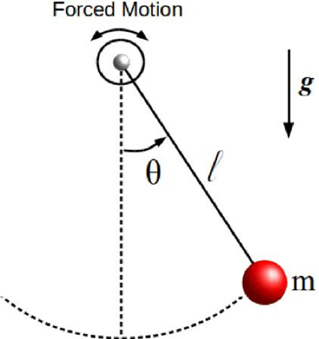
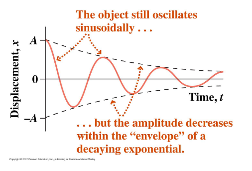
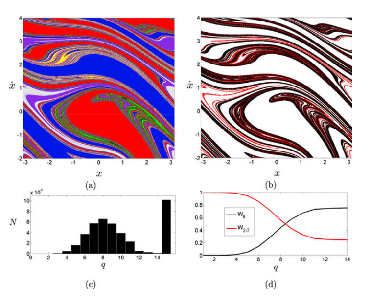
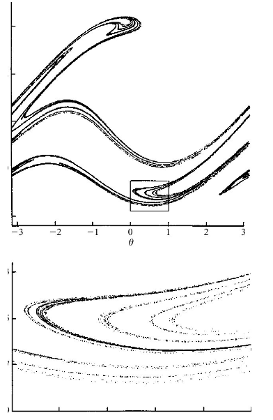
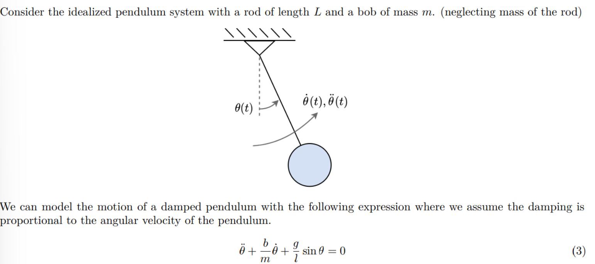
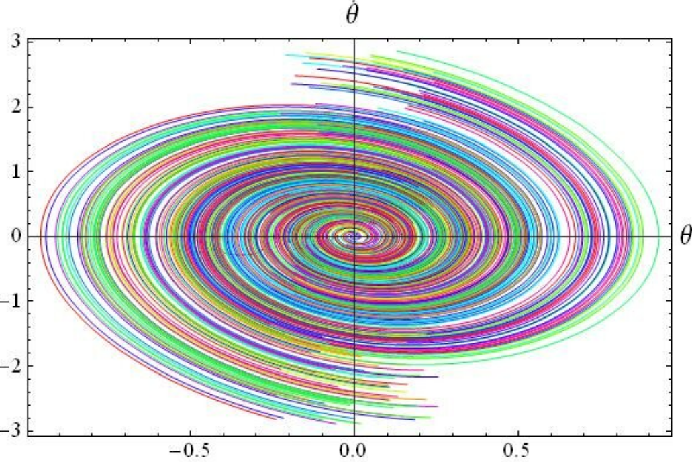
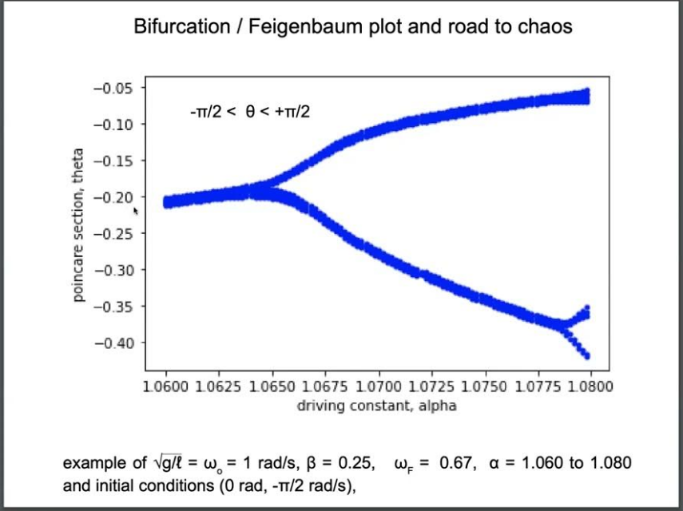
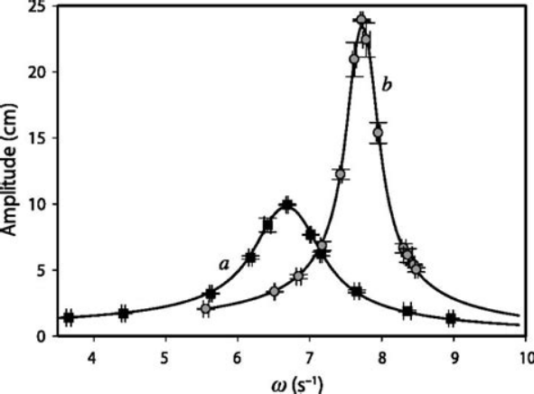
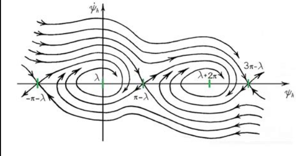

Problem 2
Investigating the Dynamics of a Forced Damped Pendulum
Motivation
The forced damped pendulum is a nonlinear dynamical system that exhibits complex behaviors due to the interplay of: - Damping forces (energy loss) - Restoring forces (gravity) - External driving forces (periodic forcing)
 Forced Damped Pendulum Diagram
This system transitions from simple harmonic motion to more complex dynamics, including: - Resonance (amplified oscillations) 
Resonance in Forced Damped Pendulum
- Quasiperiodic behavior

Quasiperiodic Motion in Forced Damped Pendulu
- Chaotic motion

Chaotic Attractor in Forced Damped Pendulum
These behaviors are crucial for understanding real-world systems such as: - Driven oscillators in engineering - Climate systems - Mechanical structures under periodic stress
1. Theoretical Foundation
The equation of motion for a forced damped pendulum is given by:
where: - $ \theta(t) $ = angular displacement (radians) - $ \beta $ = damping coefficient - $ g $ = gravitational acceleration - $ l $ = pendulum length - $ A $ = external forcing amplitude - $ \omega $ = driving frequency
Small-Angle Approximation
For small oscillations (\(\theta \approx 0\)), we approximate:
Thus, the equation simplifies to:
This resembles a driven damped harmonic oscillator, which can be solved analytically.
 Small-Angle Approximation Diagram
Resonance Condition
The system resonates when the driving frequency matches the natural frequency:
If damping is small (\(\beta \approx 0\)), we approximate:
2. Analysis of Dynamics
The system behavior depends on three key parameters:
- Damping coefficient (\(\beta\))
- Low damping → Large oscillations
- High damping → Suppressed motion
 Phase Diagram for Damping Effect
- Driving amplitude (\(A\))
- Small \(A\) → Regular periodic motion
- Large \(A\) → Chaotic motion
 Bifurcation Diagram for Driving Amplitude
- Driving frequency (\(\omega\))
- At resonance (\(\omega \approx \omega_{\text{res}}\)), energy transfer is maximized.
 Resonance Curves for Forced Oscillator
- Higher frequencies can induce chaos.
3. Practical Applications
The forced damped pendulum has several real-world applications:
- Energy harvesting: Converts oscillations into useful energy.
- Suspension bridges: Avoids destructive resonance (e.g., Tacoma Narrows Bridge).
- Electrical circuits: Analogous to driven RLC circuits.
 Electrical Circuits and Analogies to Pendulum
4. Computational Implementation
To study the pendulum numerically, we solve the nonlinear differential equation using Python.
```python import numpy as np import matplotlib.pyplot as plt from scipy.integrate import solve_ivp
Define parameters
g = 9.81 # Gravity (m/s^2) l = 1.0 # Pendulum length (m) beta = 0.5 # Damping coefficient A = 1.2 # Driving force amplitude omega = 2.0 # Driving frequency
Define the equation of motion
def forced_damped_pendulum(t, y): theta, omega_dot = y dtheta_dt = omega_dot domega_dt = -beta * omega_dot - (g / l) * np.sin(theta) + (A / l) * np.cos(omega * t) return [dtheta_dt, domega_dt]
Initial conditions
theta_0 = 0.1 # Initial angle (radians) omega_0 = 0.0 # Initial angular velocity (radians/s) y0 = [theta_0, omega_0]
Time span
t_span = (0, 20) t_eval = np.linspace(0, 20, 1000)
Solve the differential equation
sol = solve_ivp(forced_damped_pendulum, t_span, y0, t_eval=t_eval, method='RK45')
Plot results
plt.figure(figsize=(10,5)) plt.plot(sol.t, sol.y[0], label="Theta (Angle)") plt.xlabel("Time (s)") plt.ylabel("Theta (radians)") plt.title("Forced Damped Pendulum Motion") plt.legend() plt.grid() plt.show()